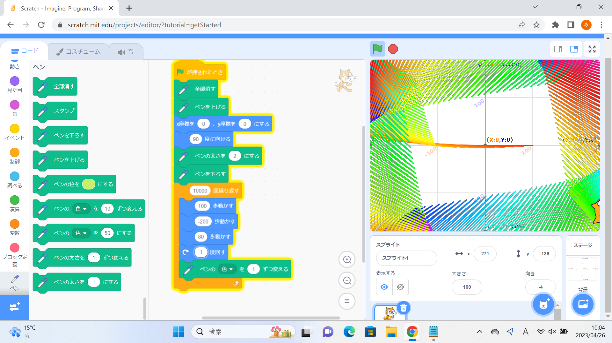
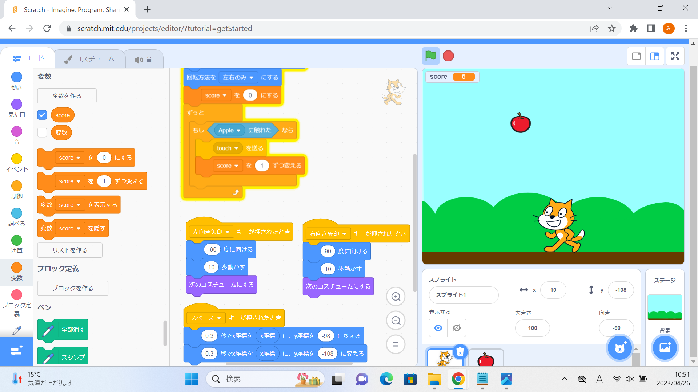

1週目のレポート ： 公大高専１年実習I-1
4a班15番 三角形abc
第1週目
1-1 サイエンスアート

1.内容
スクラッチを使って線を書くプログラムを書いた。
最初はスクリプトの猫を動かすことから始まり、その猫の動きに合わせて線を引くよう指定した。
猫を回転させたり移動させたりすることによって、様々な形の線を描くことができるようになった。
また、時間の経過とともに色を変化させるブロックを取り付けると、より視覚的に美しいものとなった。
2.感想
私はこういった規則的・幾何学的な模様が好きなので、この体験ではとてもいい経験をすることができた。
数値を少しでも変更すると全く違った模様が出来上がるというのはとても面白い結果であった。
隣の人や周りの人と自分の模様を比べると、ブロックの構成は同じなのに全く違う模様ができているというのは当然のことなのにとても不思議なことであった。
1-2 ゲーム

1.内容
同じく、スクラッチを使って簡単なゲームを作った。
なんでもいいのでスクリプト（今回はリンゴ）を用意し、猫を矢印キーで操作してキャッチするというゲームである
しかしこのプログラムが少し難しい。
猫の動きは、矢印キーに合わせて座標を動かし、ポーズを変える。リンゴは横軸はランダムな位置から、縦は1～4秒で上から下まで行くようにする。ここまではまだ良い。
しかし、リンゴをキャッチした（触れた）ときにリンゴのスクリプトを見えないようにしなければゲームとして気持ち悪くなるのである。
そこで、猫がリンゴに触れたときに信号'touch'を送るようにする。
リンゴ側は信号'touch'を受け取ったときに姿を消すようにする。これで仕掛けは完成である。
あとは背景を変え、カウンターをつけて完成である。
2.感想
二時間ほどかけて作ったものがこのくらいのレベルならば、我々が普段遊んでいるゲームはとてもレベルの高い人々が膨大な時間をかけたとてもレベルの高い「技術」なのだと実感した。
しかし、私はこのゲームを作って自分の無力を感じることはなかったので、物事は結果も大事だが、それ以上にやること自体や、その過程がとても大事なのだという学びを得ることができた。
1-3 ホームページ作成
私のホームページ
1.内容
githubを使い、自分のホームページを作成した。
もともと用意されているものをいくつか書き換えるだけではあったが、変なところを書き換えてしまってはいけないので、細心の注意を払いながら書き換えた。 2.感想
これほどの文字量、構成であってもコードをみると何十行と文字や言語が書いてあるということには驚いた。
また、0と1の組み合わせだけからここまで技術が発達してきたのは素晴らしいことだが、それと同時に何か恐ろしいことでもあると感じた。